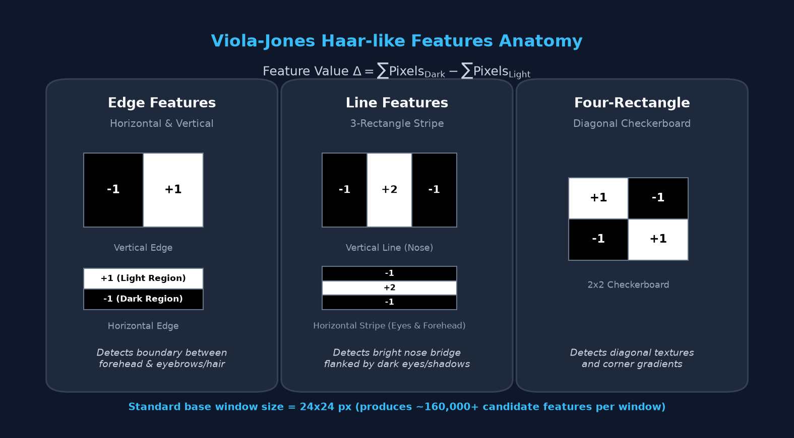
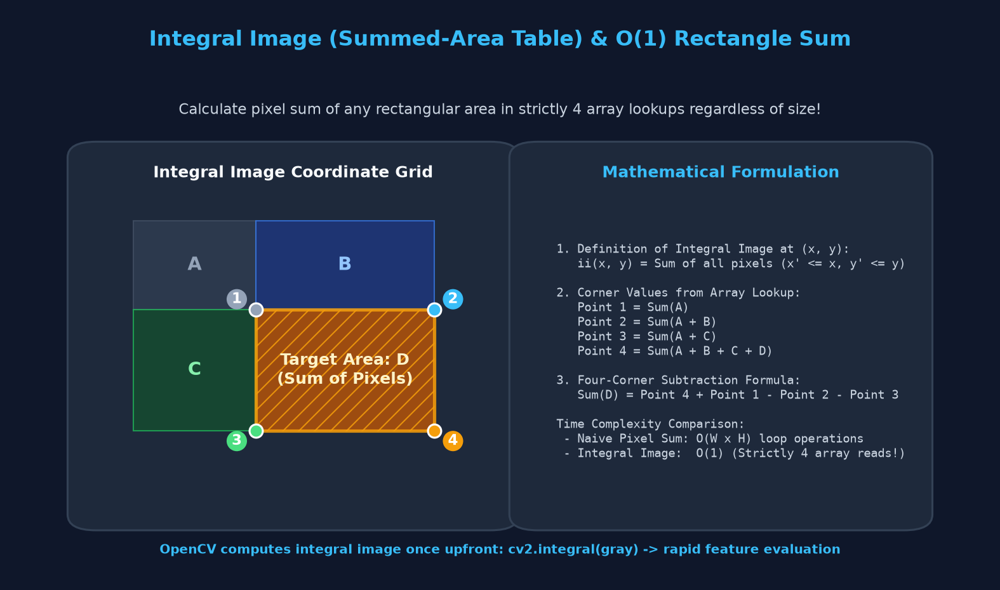
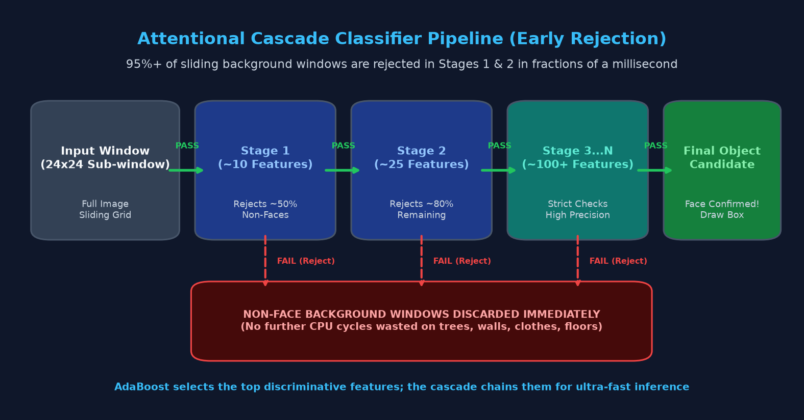
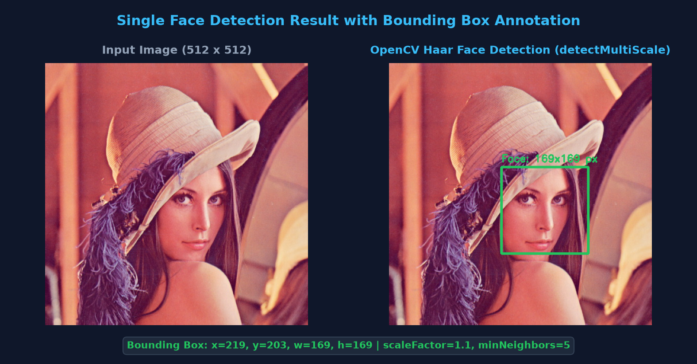
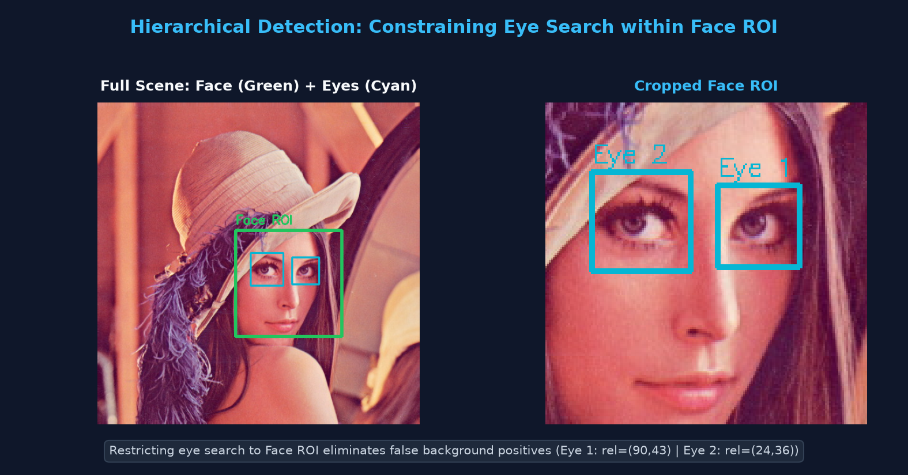
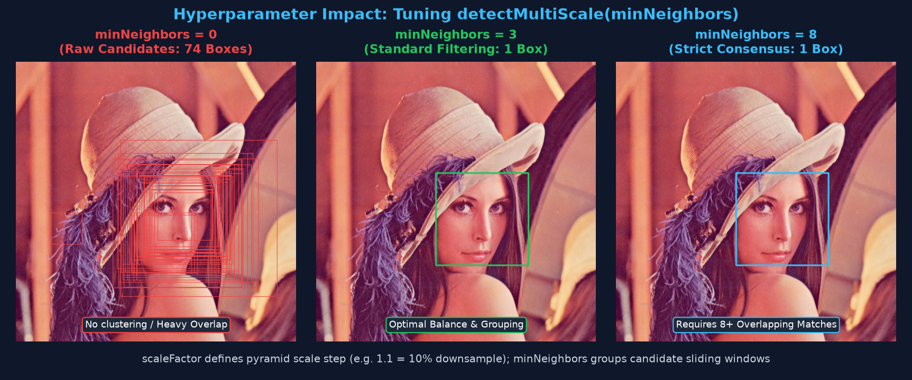

Viola-Jones Framework, Integral Images, Attentional Cascades, and Real-Time Face & Eye Detection on CPUs
Previous chapters mein humne edges, contours aur template matching dekha. Lekin real-world computer vision ka sabse common sawal hota hai: "Kya is tasveer mein koi chehra (face) ya gaadi (car) maujood hai, aur wo theek kahan sthit hai?"
Is process ko Object Detection kehte hain, jismein do tasks ek sath hote hain:
[x, y, w, h] banana.Human face mein natural light & dark contrast patterns hote hain:
Viola-Jones inhin patterns ko capture karne ke liye Haar-like rectangular filters ka istemal karta hai. Har feature ki value calculate ki jaati hai:

Ek standard 24 × 24 pixel ke detection window ke andar 160,000+ alag-alag size aur position ke rectangular features bante hain.
Agar hum standard loops se har pixel ko jodte, to ek single frame process hone mein kai seconds lag jaate!
(x, y) par uske upar aur bayein (top-left) sthit sabhi pixels ka sum pre-calculated store hota hai.
Is table ki madad se kisi bhi rectangular box ka sum sirf 4 array lookups mein calculate ho jaata hai — chahe box 5×5 pixels ka ho ya 500×500 pixels ka!

| Lookup Method | Pixel Operations Required | Time Complexity | Practical Speed |
|---|---|---|---|
| Naive Nested Loops | Width × Height additions (e.g. 50 × 50 = 2,500 operations) | O(W × H) |
Slow, unusable for real-time video |
| Integral Image (SAT) | Strictly 4 array reads + 3 additions/subtractions | O(1) Constant |
Super fast, 100+ FPS feature evaluation |
160,000 features mein se har feature face pehchanne ke liye zaroori nahi hota. Isliye Viola-Jones do clever algorithms combine karta hai:

OpenCV library ke sath kai common objects ke trained Haar models pre-bundled aate hain (XML format mein):
haarcascade_frontalface_default.xml — Frontal human faceshaarcascade_eye.xml — Human eyeshaarcascade_smile.xml — Smiling faceshaarcascade_fullbody.xml — Pedestrians / Walking humanscv2.data.haarcascades ka istemal karein. Ye ensure karta hai ki aapka code Windows, Linux, macOS aur virtual environments mein bina path error ke chale.
import cv2
# 1. Load official pre-trained cascade files via cv2.data.haarcascades
face_xml = cv2.data.haarcascades + 'haarcascade_frontalface_default.xml'
eye_xml = cv2.data.haarcascades + 'haarcascade_eye.xml'
face_cascade = cv2.CascadeClassifier(face_xml)
eye_cascade = cv2.CascadeClassifier(eye_xml)
# 2. Defensive check: Ensure XML was loaded properly
if face_cascade.empty():
raise IOError(f"Failed to load cascade classifier from: {face_xml}")
print("Haar Cascade loaded successfully! Ready for inference.")
OpenCV mein detection perform karne ke liye CascadeClassifier.detectMultiScale() method use hota hai:
| Parameter | Recommended Value | Role & Significance |
|---|---|---|
image |
Grayscale image (8-bit) | Haar features brightness contrast par kaam karte hain, isliye image ko grayscale hona zaroori hai. |
scaleFactor |
1.1 (or 1.05–1.2) |
Pyramid scaling step. 1.1 ka matlab har step par image 10% chhoti hoti hai taaki door aur paas dono chehre detect ho sakein. |
minNeighbors |
4 to 6 |
Candidate bounding boxes grouping threshold. Higher values false positives ko eliminate karte hain. |
minSize |
(30, 30) |
Isse chhota koi bhi rectangle reject ho jaayega (noise filtering). |
import cv2
# Load image and convert to grayscale
img = cv2.imread('sample_face.jpg')
gray = cv2.cvtColor(img, cv2.COLOR_BGR2GRAY)
# Load classifier
face_cascade = cv2.CascadeClassifier(cv2.data.haarcascades + 'haarcascade_frontalface_default.xml')
# Detect faces in multi-scale pyramid
faces = face_cascade.detectMultiScale(
gray,
scaleFactor=1.1,
minNeighbors=5,
minSize=(30, 30)
)
print(f"Total faces detected: {len(faces)}")
# Draw green bounding boxes around all detected faces
for (x, y, w, h) in faces:
cv2.rectangle(img, (x, y), (x + w, y + h), (0, 255, 0), 2)
cv2.putText(img, f"Face: {w}x{h}", (x, y - 8),
cv2.FONT_HERSHEY_SIMPLEX, 0.6, (0, 255, 0), 2)
# Save or display result
cv2.imwrite('detected_faces.jpg', img)

Agar aap poori tasveer mein eye_cascade chalaoge, to shirt ke buttons, background ke patterns ya chashme par bohot saare false positives aa sakte hain.
Isliye industrial best practice hoti hai: Hierarchical / Nested Detection.
(x, y, w, h) detect karo.(ex, ey) ko global image coordinates mein transform karne ke liye (x + ex, y + ey) karo.import cv2
img = cv2.imread('sample_face.jpg')
gray = cv2.cvtColor(img, cv2.COLOR_BGR2GRAY)
face_cascade = cv2.CascadeClassifier(cv2.data.haarcascades + 'haarcascade_frontalface_default.xml')
eye_cascade = cv2.CascadeClassifier(cv2.data.haarcascades + 'haarcascade_eye.xml')
faces = face_cascade.detectMultiScale(gray, scaleFactor=1.1, minNeighbors=5, minSize=(30, 30))
for (x, y, w, h) in faces:
# 1. Draw Green box for Face
cv2.rectangle(img, (x, y), (x + w, y + h), (0, 255, 0), 2)
# 2. Extract Face ROI (Grayscale for detection, Color for drawing)
roi_gray = gray[y:y+h, x:x+w]
roi_color = img[y:y+h, x:x+w]
# 3. Detect eyes STRICTLY inside Face ROI
eyes = eye_cascade.detectMultiScale(roi_gray, scaleFactor=1.1, minNeighbors=5, minSize=(20, 20))
for (ex, ey, ew, eh) in eyes:
# 4. Draw Cyan box for Eye (inside ROI directly using ex, ey)
cv2.rectangle(roi_color, (ex, ey), (ex + ew, ey + eh), (255, 255, 0), 2)
cv2.imwrite('face_and_eyes.jpg', img)

Haar Cascade ki accuracy aur false-positive rate poori tarah aapke do parameters par depend karti hai:
scaleFactor=1.05: Chhote scale steps leta hai. Accuracy high hoti hai aur door baithe chhote chehre bhi detect ho jaate hain, lekin computation time badh jaata hai (~25 ms).
scaleFactor=1.2: Bade steps leta hai. Boht fast hota hai (~5 ms), lekin kai baar border-line faces skip ho jaate hain.
minNeighbors=0: Zero grouping. Raw candidates milte hain (70+ overlapping boxes — Figure 15.6 dekhein).
minNeighbors=4 to 6: Ideal balance. Noise aur duplicate boxes group hokar ek crisp bounding box banate hain.
minNeighbors=10+: Bohot strict. False positives zero ho jaate hain lekin real faces miss hone ka risk rehta hai.

Industry mein kab Haar Cascades use karna chahiye aur kab modern Deep Learning (YOLO, SSD, MediaPipe Face Mesh)?
| Feature / Metric | Haar Cascades (Viola-Jones) | Deep Learning (YOLO / MediaPipe / SSD) |
|---|---|---|
| Hardware Requirements | Extremely Low (Raspberry Pi, CPU, Microcontrollers) | Medium to High (GPU, NPU, or heavy CPU neural runtime) |
| Inference Speed | Ultra-fast (5–15 ms on pure CPU) | Fast on GPU (10–30 ms), moderate on pure CPU |
| Side-Pose & Tilt Handling | Poor (Only frontal faces; fails beyond ±20° yaw/pitch) | Excellent (Handles profile, tilted, partially covered faces) |
| Lighting Sensitivity | High (Shadows or extreme contrast confuse features) | Robust (Robust against harsh lighting, blur, darkness) |
| Model Weight Size | ~1 MB (Compact XML file) | 10 MB to 200+ MB (ONNX / PyTorch weights) |
| Ideal Use Cases | Classroom projects, low-power embedded robotics, quick webcam triggers | Commercial biometric attendance, self-driving cars, security surveillance |
cv2.cvtColor(img, cv2.COLOR_BGR2GRAY) karke grayscale pass karein.
CascadeClassifier exception raise nahi karta balki khali object return kar deta hai. Jab aap detectMultiScale call karte ho tab crash hota hai! Solution: Hamesha assert not face_cascade.empty() check karein.
(ex, ey) relative hote hain. Agar aap unhe poori image par bina x + ex aur y + ey jode draw karoge, to eyes hamesha image ke top-left corner par draw hongi!
scaleFactor=1.01 set karne se detector 1% ke chhote steps se har scale par window slide karega, jisse 1 frame process hone mein 500 ms se zyada lag jaayenge. Balanced real-time video ke liye 1.1 se 1.15 use karein.
Apni understanding test karne ke liye questions par click karein aur answer reveal karein:
Point 4 + Point 1 − Point 2 − Point 3 formula se strictly 4 array lookups mein mil jaata hai, bina kisi pixel iteration loop ke.
minNeighbors define karta hai ki ek candidate box ko valid manne ke liye uske aas-paas kitne overlapping candidate rectangles hona zaroori hai. Isko badhane se isolated noise aur false positives filter ho jaate hain.
(ex, ey) local ROI ke relative coordinates hote hain. Global image par draw karne ke liye usme Face bounding box ka origin (x, y) add karna anivarya hai.